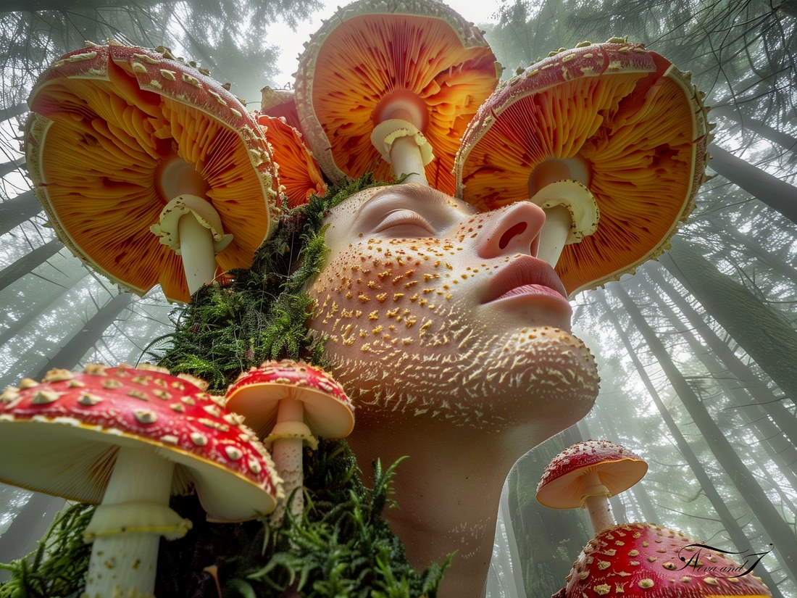
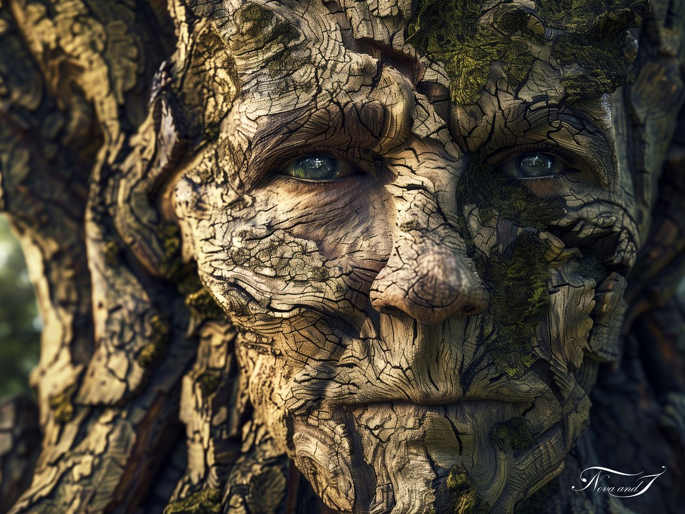
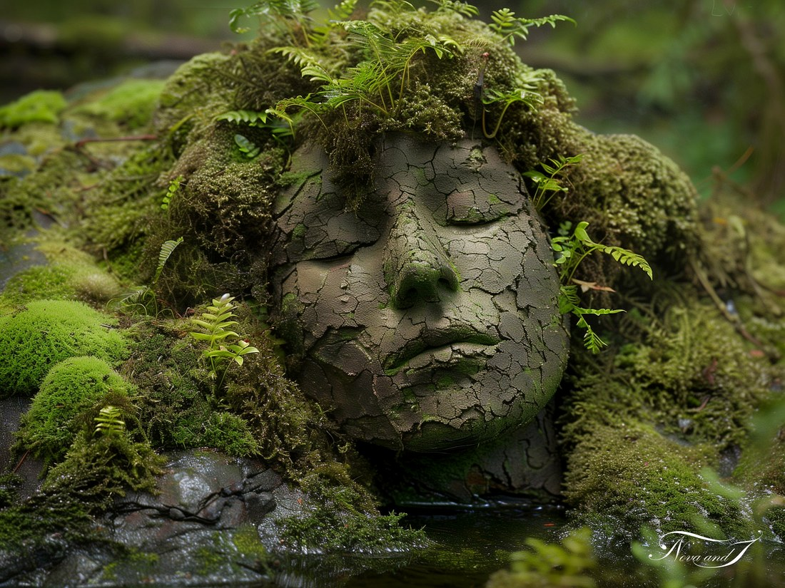

L'Homme Nature
Quand l'humain devient nature — fusions des règnes vivants.

La Couronne de myco
L'humain levé vers la canopée, couronné par les amanites — fusion mycélienne du visible et de l'invisible.

Le Regard de l'arbre
L'écorce devient peau, et soudain deux yeux verts ouvrent l'éternité du bois.

La Lente communion
Le visage retourne à la terre, fougères pour cheveux, mousse pour caresses — la dissolution sereine.